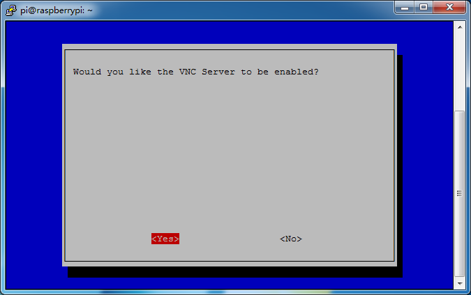
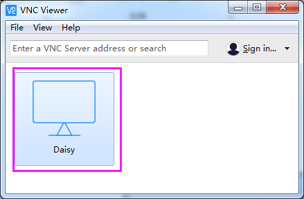
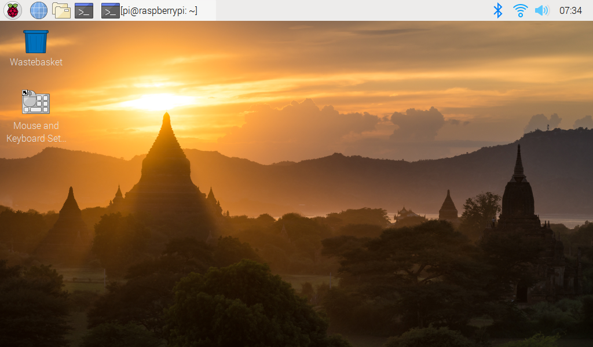

Remotedesktop¶
Es gibt zwei Möglichkeiten, den Desktop des Raspberry Pi fernzusteuern: mit VNC und XRDP.
VNC¶
Sie können die Funktion des Remotedesktops über VNC verwenden.
Aktivieren Sie den VNC-Dienst
Der VNC-Dienst wurde im System installiert. Mit Default ist VNC deaktiviert. Sie müssen es in der Konfiguration aktivieren.
Schritt 1
Geben Sie den folgenden Befehl ein:
sudo raspi-config
{kind=link}
Schritt 2
Wählen Sie 3 Schnittstellenoptionen, indem Sie die Abwärtspfeiltaste auf Ihrer Tastatur drücken und dann die Eingabetaste drücken.

Schritt 3
P3 VNC

Schritt 4
Wählen Sie Ja -> OK -> Fertig stellen, um die Konfiguration zu beenden.
{kind=link}
Melden Sie sich bei VNC an
Schritt 1
Sie müssen den VNC Viewer auf einem PC installieren. Öffnen Sie die Installation nach Abschluss der Installation.
Schritt 2
Wählen Sie dann “Neue Verbindung”.
{kind=link}
Schritt 3
Geben Sie die IP-Adresse des Raspberry Pi und einen beliebigen Namen ein.

Schritt 4
Doppelklicken Sie auf die gerade erstellte Verbindung:
{kind=link}
Schritt 5
Geben Sie Benutzername (pi) und Passwort ein (raspberry mit Default).

Schritt 6
Jetzt können Sie den Desktop des Raspberry Pi sehen:

XRDP¶
xrdp bietet eine grafische Anmeldung an Remotecomputern mit RDP (Microsoft Remote Desktop Protocol).
Installieren Sie XRDP
Schritt 1
Melden Sie sich mit SSH bei Raspberry Pi an.
Schritt 2
Geben Sie die folgenden Anweisungen ein, um XRDP zu installieren.
sudo apt-get update
sudo apt-get install xrdp
Schritt 3
Später beginnt die Installation.
Geben Sie „Y“ ein und drücken Sie zur Bestätigung die Taste „Enter“.

Schritt 4
Wenn Sie die Installation abgeschlossen haben, sollten Sie sich mit Windows-Remotedesktopanwendungen bei Ihrem Raspberry Pi anmelden.
Melden Sie sich bei XRDP an
Schritt 1
Wenn Sie Windows-Benutzer sind, können Sie die mit Windows gelieferte Remotedesktopfunktion verwenden. Wenn Sie Mac-Benutzer sind, können Sie Microsoft Remote Desktop aus dem APP Store herunterladen und verwenden, und es gibt keinen großen Unterschied dazwischen. Das nächste Beispiel ist der Windows-Remotedesktop.
Schritt 2
Geben Sie „**mstsc**" in „Ausführen“ (WIN + R) ein, um die Remotedesktopverbindung zu öffnen, und geben Sie die IP-Adresse von Raspberry Pi ein. Klicken Sie dann auf „Verbinden“.

Schritt 3
Dann erscheint die xrdp-Anmeldeseite. Bitte geben Sie Ihren Benutzernamen und Ihr Passwort ein. Danach klicken Sie bitte auf „OK“. Wenn Sie sich zum ersten Mal anmelden, lautet Ihr Benutzername „pi“ und das Passwort „raspberry“.

Schritt 4
Hier können Sie sich erfolgreich über den Remotedesktop bei RPi anmelden.
{kind=link}
Urheberrechtshinweis
Alle Inhalte, einschließlich, aber nicht beschränkt auf Texte, Bilder und Kode in diesem Handbuch, sind Eigentum der SunFounder Unternehmen. Sie sollten es nur für persönliche Studien, Nachforschungen, Genüsse oder andere nichtkommerzielle oder gemeinnützige Zwecke gemäß den entsprechenden Bestimmungen und Urheberrechtsgesetzen verwenden, ohne die gesetzlichen Rechte des Autors und der relevanten Rechteinhaber zu verletzen. Für jede Person oder Organisation, die diese ohne Erlaubnis für kommerzielle Zwecke nutzt, behält sich das Unternehmen das Recht vor, rechtliche Schritte einzuleiten.